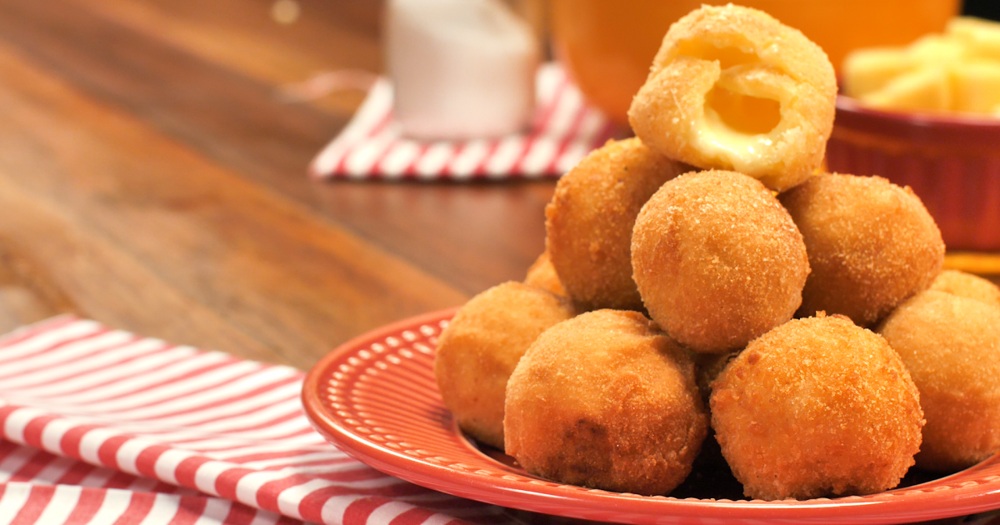
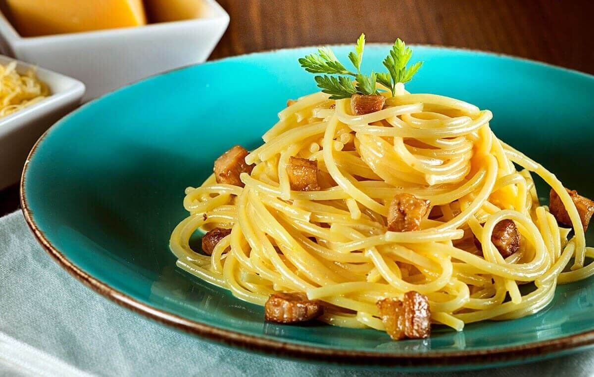
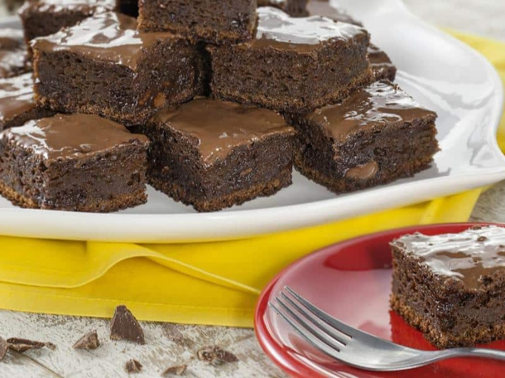
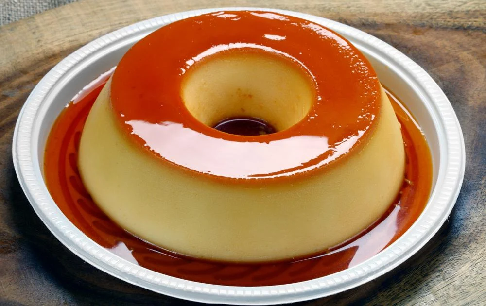

Aperitivos
-
Guacamole
Ingredientes:
- 2 abacates maduros
- 1 tomate grande
- 1 cebola pequena
- 1 pimenta jalapeño
- 2 dentes de alho
- 1 limão
- Coentro fresco
- Sal
Modo de Preparo:
- Corte os abacates em cubos e coloque em uma tigela.
- Corte o tomate, a cebola, a pimenta jalapeño e o coentro em pedaços pequenos e adicione à tigela.
- Adicione o suco de limão, o sal e misture bem.
- Sirva com nachos ou tortilhas.
-
Bolinhas de Queijo
Ingredientes:
- 500g de queijo muçarela ralado
- 1 xícara de farinha de trigo
- 2 ovos
- 1 xícara de farinha de rosca
- Óleo para fritar
Modo de Preparo:
- Em uma tigela, misture o queijo muçarela e a farinha de trigo.
- Com as mãos, forme bolinhas do tamanho de uma noz.
- Em outra tigela, bata os ovos e em uma terceira tigela coloque a farinha de rosca.
- Passe as bolinhas primeiro nos ovos, depois na farinha de rosca.
- Frite as bolinhas em óleo quente atéque estejam douradas.
- Escorra em papel-toalha e sirva quente.
Pratos Principais
-
Frango Assado com Batatas

Ingredientes:
- 1 frango inteiro
- 4 batatas médias
- 2 cebolas médias
- 4 dentes de alho
- 1 limão
- 2 colheres de sopa de azeite de oliva
- Sal e pimenta a gosto
Modo de Preparo:
- Pré-aqueça o forno a 200°C.
- Corte as batatas em cubos médios e as cebolas em pedaços grandes.
- Coloque as batatas e as cebolas em uma assadeira grande.
- Corte o limão em fatias e coloque sobre as batatas e as cebolas.
- Esfregue o frango com o alho picado, o sal e a pimenta.
- Coloque o frango sobre as batatas e as cebolas na assadeira.
- Regue o frango e as batatas com o azeite de oliva.
- Leve ao forno por cerca de 1 hora e 30 minutos, ou até que o frango esteja cozido e as batatas estejam macias.
- Sirva quente.
-
Spaghetti alla Carbonara
Ingredientes:
- 500g de spaghetti
- 200g de bacon em cubos
- 4 ovos
- 1 xícara de queijo parmesão ralado
- Sal e pimenta a gosto
Modo de Preparo:
- Cozinhe o spaghetti em água com sal até que esteja al dente.
- Enquanto isso, frite o bacon em uma frigideira até que esteja crocante.
- Bata os ovos em uma tigela e adicione o queijo parmesão, o sal e a pimenta.
- Quando o spaghetti estiver cozido, escorra e reserve um pouco da água do cozimento.
- Coloque o spaghetti na frigideira com o bacon e misture bem.
- Adicione a mistura de ovos e queijo parmesão ao spaghetti e misture bem.
- Se necessário, adicione um pouco da água do cozimento para deixar a mistura mais cremosa.
- Sirva quente, decorado com mais queijo parmesão e pimenta-do-reino moída na hora.
Sobremesas
-
Brownie de Chocolate
Ingredientes:
- 200g de chocolate meio amargo
- 150g de manteiga sem sal
- 1 xícara de açúcar
- 1/2 xícara de farinha de trigo
- 3 ovos
- 1 colher de chá de essência de baunilha
Modo de Preparo:
- Pré-aqueça o forno a 180°C e unte uma forma quadrada de 20cm com manteiga e farinha de trigo.
- Derreta o chocolate e a manteiga em banho-maria ou no micro-ondas.
- Adicione o açúcar e misture bem.
- Adicione a farinha de trigo e misture novamente.
- Bata os ovos em uma tigela e adicione a essência de baunilha.
- Adicione os ovos à mistura de chocolate e misture bem.
- Despeje a massa na forma preparada e leve ao forno por cerca de 20 a 25 minutos, ou até que um palito inserido no centro saia limpo.
- Deixe esfriar na forma por cerca de 10 minutos antes de desenformar.
- Corte em quadrados e sirva com uma bola de sorvete de baunilha.
-
Pudim de Leite Condensado
Ingredientes:
- 1 lata de leite condensado
- 1 lata de leite (use a lata de leite condensado vazia para medir)
- 3 ovos
- 1 colher de sopa de açúcar
- 1 colher de chá de essência de baunilha
Modo de Preparo:
- Pré-aqueça o forno a 180°C e prepare uma forma de pudim com furo no meio.
- Bata os ovos em uma tigela.
- Adicione o leite condensado e o leite e misture bem.
- Adicione a essência de baunilha e misture novamente.
- Coloque o açúcar em uma panela e leve ao fogo médio.
- Mexa continuamente até que o açúcar derreta e forme um caramelo.
- Despeje o caramelo na forma de pudim, girando-a para que o caramelo cubra todo o fundo.
- Despeje a mistura de leite condensadona forma, sobre o caramelo.
- Cubra a forma com papel alumínio e leve ao forno em banho-maria por cerca de 1 hora e 30 minutos, ou até que um palito inserido no centro saia limpo.
- Retire do forno e deixe esfriar na forma por cerca de 10 minutos.
- Desenforme o pudim em um prato de servir e deixe esfriar completamente antes de servir.